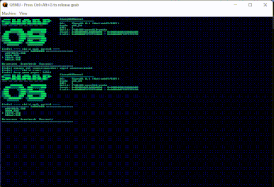

PowerShell 7.6.5
Stock pwsh boots from FAT32 to an interactive prompt and runs real cmdlets. PSReadLine works fully: colors, Tab completion, history, Ctrl+C.
- Get-ChildItem
- pipelines
- [Math]::Sqrt
- PSReadLine
- XtermSharp
Bootloader, kernel, garbage collector, drivers, shell and apps — all C#. Not a single .c or .asm file in the tree. And it already runs stock PowerShell 7 and DOOM.
MSBuild and PowerShell only orchestrate the build. Interrupt handlers, write barriers, interface dispatch trampolines, reading CR3 — each is solved one of three ways.
As far as we know, no other OS holds this invariant. If a task looks impossible in C#, it's been framed wrong.
[RuntimeExport], [UnmanagedCallersOnly], delegate* unmanaged, fixed, pointer arithmetic.
A source generator bakes 16 early-boot stubs into byte templates; once the heap is up, Iced is called directly.
var a = new Assembler(64); a.mov(rax, rcx); a.Assemble(writer, rip);
When the linker needs a symbol ILC doesn't emit, an MSBuild task generates the .obj itself.
[BootAsm.CoffDataSymbol("__security_cookie", Section = ".data")] public static ulong SecurityCookie = 0x2B992DDFA232UL;
From bare metal up to stock .NET assemblies loaded byte-for-byte. A unikernel: one address space, its own scheduler, its own GC.
Kernel, boot, drivers, scheduler. Direct access to CR3, PCI, MMIO, IDT, local APIC.
Freestanding apps: launcher, shell, DOOM, NES emulators. Each one gets its own collector and heap.
Stock .NET DLLs, byte-for-byte: JIT, reflection, the full BCL. This is how PowerShell runs.
The toughest tests of the whole stack at once: TPL, exceptions, reflection, GC, FAT32, ANSI console, framebuffer.
Stock pwsh boots from FAT32 to an interactive prompt and runs real cmdlets. PSReadLine works fully: colors, Tab completion, history, Ctrl+C.

ManagedDoom built as a PE app on our own std: the WAD is read from FAT32, frames go out via GOP at 2× scale, PS/2 keyboard input, 35 Hz off the HPET.

A Terminal.Gui launcher, a bash-syntax shell with history, up to 16 processes via Process.Start, a FAT32 driver that writes, an xHCI USB stack tested on real hardware, NES emulators.
PIPEGEN | PIPEFILT 3 | PIPECNT works just like in bash — but every stage receives a real object with fields. It lives in shared exchange memory: no parsing, no copying into the receiver's heap.
PIPESPY stages see the same address: one object flows through four programs.Copy, forward, read in place. On a 100-object graph it's 5–6× faster than BinaryWriter + BinaryReader.
Kusto Query Language over a message stream: where, summarize, extend, project. The query binds before the first data arrives.
Pipe.Read<LogEntry>() .Where(e => e.Level >= min) .WriteTo(); // zero-copy
Fully streaming, one message in memory: a 100 MiB file passes through a 64 MiB heap.
Every green dot is confirmed by in-kernel probe runs. The full matrix with notes lives in the README.
| Feature | Kernel-AOT | PE-app | CoreCLR |
|---|---|---|---|
| Managed heap, GC with precise stack scanning | |||
try / catch / finally / when filters | |||
async / await, yield return, lambdas | |||
| BCL collections, LINQ | |||
Task.Run, lock, multithreaded processes | |||
Correctly rounded Math (SharpLibm, CORE-MATH) | |||
dynamic | |||
| Reflection | |||
| USB (xHCI): keyboard, flash drives, U2F hardware key | |||
| Preemptive multitasking | |||
| SMP | |||
| Networking |
It builds with a plain dotnet publish -r win-x64. mise or nix installs the toolchain, and the image boots in QEMU.
mise.toml / flake.lock.-SkipCoreClr.run_build.ps1 builds the kernel, makes the image and launches QEMU..nes cartridges and PowerShell go into payloads/.# macOS / Linux / Windows brew install mise # or: winget install jdx.mise git clone --recurse-submodules \ https://github.com/daniilvaino/SharpOS.git cd SharpOS mise trust && mise bootstrap mise exec -- pwsh # then, in PowerShell ./build.ps1 launcher $env:SHARPOS_GUI=1; ./run_build.ps1 -UsbOnly -SkipCoreClr
# NixOS or any Linux with flakes enabled git clone --recurse-submodules \ https://github.com/daniilvaino/SharpOS.git cd SharpOS nix develop --command pwsh # then, in PowerShell ./build.ps1 launcher $env:SHARPOS_GUI=1; ./run_build.ps1 -UsbOnly -SkipCoreClr
Third-party code that ships in the image, and the projects SharpOS learned from.
Open source under CC0 — public domain. Use it, change it, send PRs.